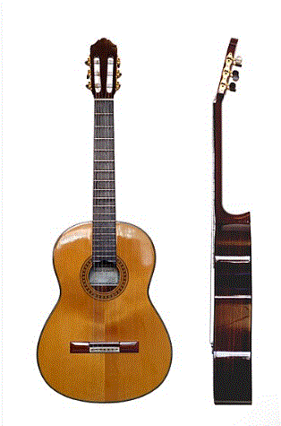

Történet
A gitár őse a spanyol gitár. Az akusztikus gitár főként fából készül, és üreges testének köszönhetően természetes módon felerősíti a hangokat.
A gitár (nemzetközi szó a spanyol guitarra-ból, ez pedig – arab közvetítéssel – a görög kitharából) a húros hangszerek, ezen belül a pengetős hangszerek csoportjába tartozó hangszer. Megszólaltatása pengetővel, illetve ujjal történik. Általában hat húrja van, ezek hangolása E-A-d-g-h-e'. Mint láthatjuk, a húrok nagy része kvart távolságra van egymástól, kivétel a g-h, ez nagyterc; így a gitáros több mint három oktáv hangterjedelem fölött rendelkezik.
